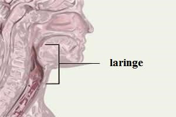

Na imagem a seguir, é possível ver os órgãos que compõe o sistema respiratório, com uma esquematização dos alvéolos e bronquíolos ao lado.
Na imagem a seguir é possível ver ambos estes órgão.
Na imagem a seguir, é possível ver a laringe, e sua localização no corpo humano.
Na imagem a seguir é possível ver a esquematização de uma traqueia e dos órgãos próximos a ela.
Na imagem a seguir é possível ver uma esquematização dos brônquios e bronquíolos
Na imagem a seguir é possível ver uma esquematização dos bronquíolos e alvéolos.
Na imagem a seguir é possível ver uma esquematização dos alvéolos, e sua interação nos fenômenos que ocorrem no Sistema Respiratório.
Na imagem a seguir é possível ver a esquematização dos pulmões, traqueia, brônquios, brônquiolos e alvéolos.